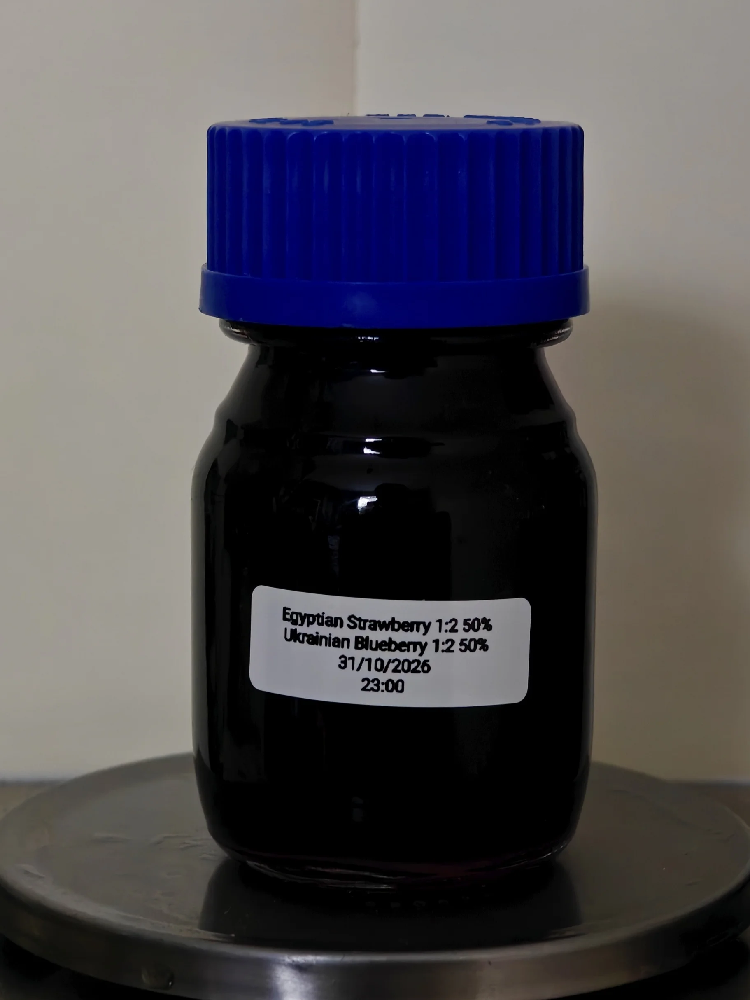

CoBerry Tincture
A recent mixture of the already extracted Ukrainian blueberry and Egyptian Strawberry tinctures.
Equal ratios of both fruit tinctures give a pitch black liquid mixed together in hopes of producing a more cohesive fruit-berry aroma.
This mixture fills in gaps where both were lacking, providing sweetness to the blueberry and the floral notes to the strawberry.
CoBerry tincture is harmonious, a complete material that when given a proper base and anchoring can be a fully fortified olfactory experience.